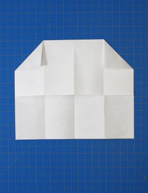
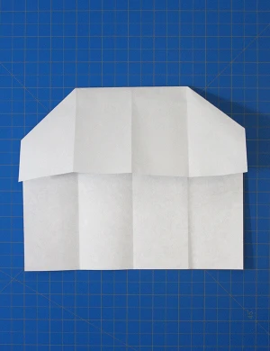

1Step 1
Fold the paper in half and then fold in half again.
Fold the paper in half and then fold in half again.

Open the previous folds up. Mark a point about 4 inches (10cm) down from the top and fold down along that point.

Fold the top two corners in to the closest crease.

Unfold and then accordion fold the top corners into the inside.

Fold the two outer flaps in to the center line.

Fold the airplane in half towards you.
With a calm day and a level throw, expect roughly 8–11 metres (about 26–36 feet). Among the 37 distance-rated designs in this collection it ranks #34. Wind, paper weight, and small crease errors all change the result.
在无风天气、水平投掷的情况下，大约能飞 大约 8–11 米。在站内 37 款远距机型中排第 34。风力、纸张克重和折痕误差都会改变实际结果。
A well-trimmed Water Plane should hold about 6–8 seconds of hang time. That places it #8 of 36 designs for time aloft. Launching from a higher spot and keeping the wings level will extend it.
调整得当的 Water Plane 可以保持大约 6–8 秒。在站内 36 款机型中滞空排第 8。从更高的位置轻投、保持两翼水平，都能延长滞空时间。
It is a time aloft and acrobatic glider rated Easy difficulty. Fold it from Letter & A4 in 6 steps with no scissors required.
它是一款滞空特技机型，难度为简单，用Letter & A4折 6 步，全程不用剪刀。
Launch softly at a slight upward angle, ideally from a high point, and let the plane glide instead of forcing it.
以略向上扬的角度轻轻放出，最好从高处投掷，让飞机自然滑翔，不要用力硬抛。